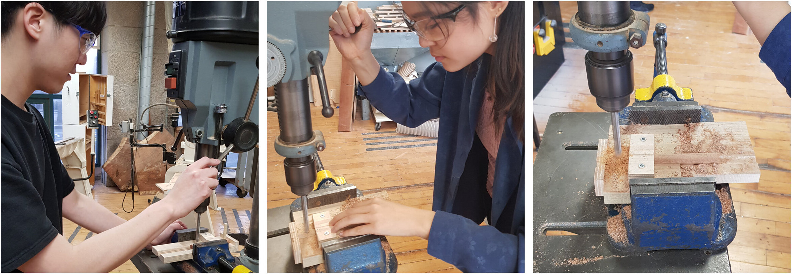

T I L L Y ' S F O R E S T
toy design • psychology of sustainability
O V E R V I E W
Every year the human race takes more and more from nature to advance our ever-evolving world. The impact we have on our environment inevitably increases on a larger scale, compared to our efforts to preserve and protect what is left.
With this in mind, it is vitally important that our current & future generations learn and practice a mindset of sustainability--that we are mindful of this process of give and take with the natural world.
In my Toy Design class at RISD, we were tasked with creating a toy with a certain social justice initiative in mind. As sustainabililty is something that is dear to our hearts, my partner and I decided to make this initiative the focus of our project. We wanted to not only use sustainable materials, but also investigating the process of play itself as a way to impart the mindset of sustainability.
✧
I D E A T I O N
After initial market research and with this focus in consideration, we constructed some initial problem statements:
INITIAL SKETCHES
PROCESS
 ✧
F I N A L D E S I G N
Tilly's Forest is a wooden building toy that highlights the relationship between human consumption of natural resources and the resulting effect on ecosystems and the cycle of life within these environments. We are in a constant process of give and take with the world around us; Tilly helps teach kids that our actions have direct, permanent consequences on other living things. There is an irreplaceable connection between animals in threatened areas andd their habitats; understanding the importance and beauty of this relationship is the first step in teaching the mindset of sustainability to kids in a thoughtful, fun, and interactive way.
STORYBOOK

FINAL MODEL
.jpg)
deconstruct to reconstruct!
Tilly's forest teaches children the concept of having to destroy and take away from the environment in order to build something for ourselves. It highlights the conscious decisions we have to make in order to find an ethical andd balanced solution.
This simple "deconstruct to construct" relationship illustrates the idea that in order to make something, they have to take apart Tilly's home. Therefore, the amount of material they use affects Tilly and her egg.